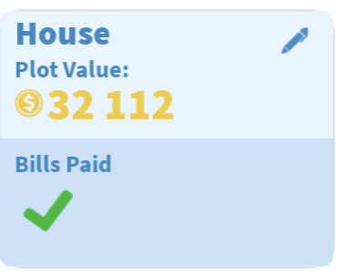
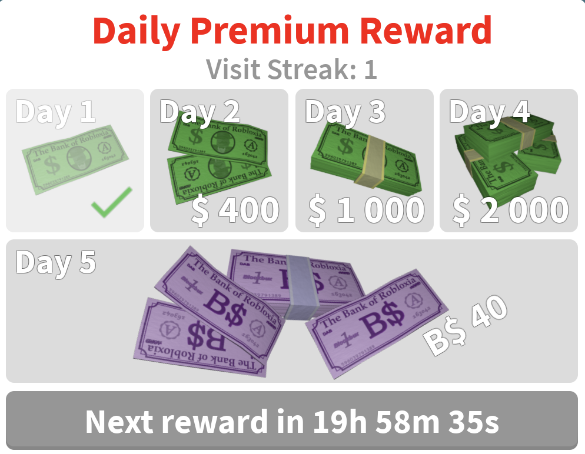

Currency
Money is the main currency in Bloxburg. It is primarily used to build and pay bills, but it can also be spent at places around the map, such as stores and event markets.

Bloxbux

Bloxbux is a special currency you need to buy extra plots and Bloxbux-exclusive items and furniture. You can earn Bloxbux by participating in seasonal events, completing milestones, and logging in for the daily reward. On every seventh day of your daily login, you get 20 Bloxbux and forty if you have the Premium game pass.